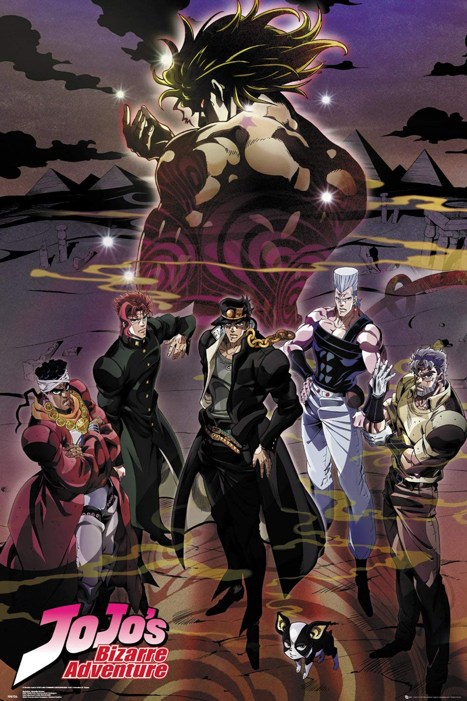

Resenha
JoJo é um anime de ação e comédia que, atualmente, está dividido em 6 partes, sendo todas elas com um protagonista e antagonista diferente, o que torna a obra mais diversificada e menos enjoativa, além dos poderes serem outros. Então podemos dizer que JoJo é um bom anime para se assistir quando se busca algo mais divertido e diferente do dia a dia.
Nota
7/10
